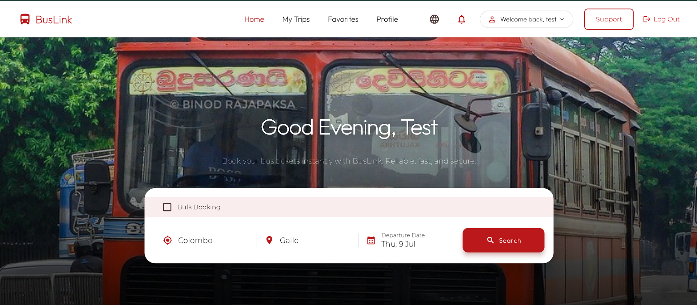

01
Smart Bus Reservation System
BusLink
Staffordshire University Capstone
A research-led academic product developed from problem discovery and stakeholder research through prioritisation, UX, Agile execution, project delivery and validation.
102 survey responses
10+ stakeholder interviews
3 Agile sprints
300+ test cases
Explore BusLink →
